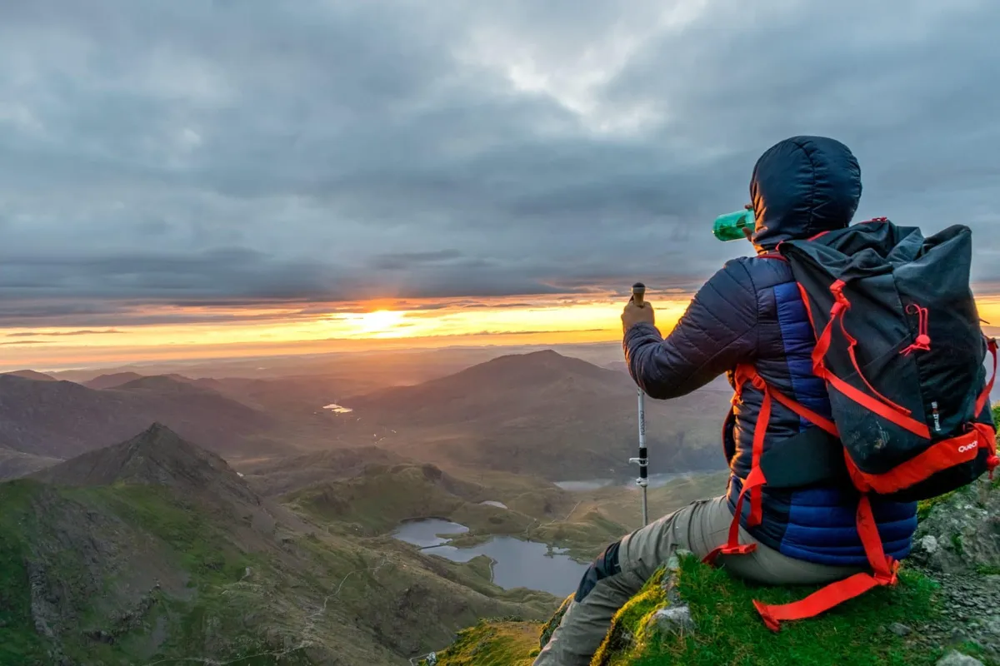

Focusing On The Heart
by Jay Wamsley | Photos by Jay Drowns A dozen years ago, Being a soft-adventure sport, almost anyone in reasonable physical condition can go trekking. To get initiated into trekking begin with day hikes, returning to your starting point in the evening. .
Move on to a multi-day trek which is relatively easy, in order to get to know your ability and aptitude. You can venture into the mountains with an experienced trekker, join an adventure club, or go with a reputed adventure travel company.
It is not a good idea to venture out into the mountains alone – unless you happen to be a distant relative of the mythical Himalayan yeti (or an aspiring Reinhold Messner, the first person in the world to have climbed all fourteen 8000m peaks, including the first oxygen-less ascent and later the first solo ascent of Everest). A basic knowledge of camp craft, map reading and
first aid is essential before you go trekking. It’s a good idea to do an adventure course from one of the mountaineering/ adventure institutes in India. A basic course in mountaineering and a first-aid course are recommended if you decide to take it up more seriously and trek to remote/high-altitude areas. Get as much information about the trekking area as possible – the people, their culture, the geography, terrain, medical/rescue facilities and weather conditions – before you go.